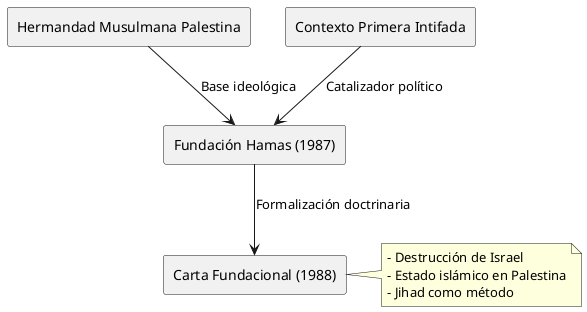
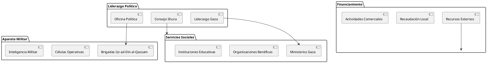
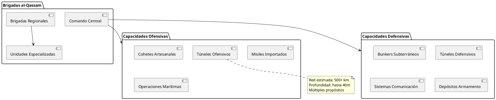
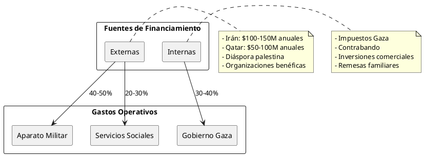
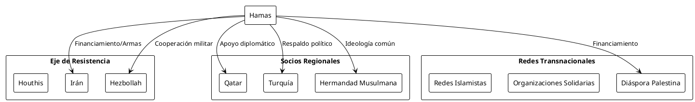
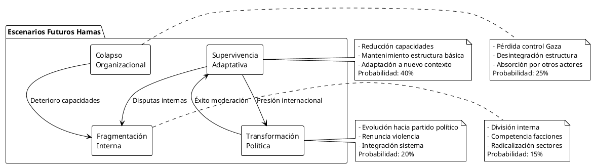
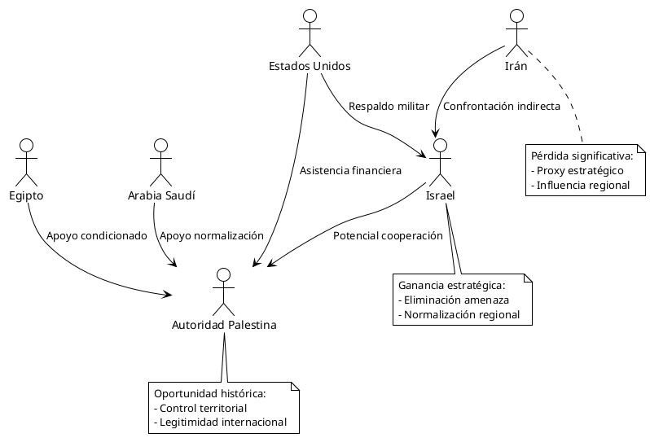

Hamas: Análisis Integral de Movimiento, Estructura y Evolución
Hamas: Análisis Integral de Movimiento, Estructura y Evolución
Definición y Contextualización
Hamas (Harakat al-Muqawama al-Islamiyya - Movimiento de Resistencia Islámica) constituye una organización político-militar palestina que ha redefinido el panorama del conflicto israelo-palestino desde su fundación en 1987. Su naturaleza híbrida como movimiento de resistencia, partido político y proveedor de servicios sociales la convierte en un actor complejo dentro del ecosistema geopolítico de Oriente Medio.
Metodología de Análisis
Este documento emplea un enfoque multidisciplinario que integra:
- Análisis histórico-político
- Evaluación de estructuras organizacionales
- Examen de redes de financiamiento
- Prospectiva estratégica basada en escenarios
Orígenes Históricos y Fundación
Contexto Histórico Pre-Fundacional
| Período | Eventos Clave | Impacto en la Formación |
|---|---|---|
| 1967-1980 | Ocupación israelí de Gaza y Cisjordania | Crecimiento del sentimiento nacionalista |
| 1980-1987 | Consolidación de la Hermandad Musulmana | Base ideológica y organizacional |
| Primera Intifada | Levantamiento popular palestino | Catalizador directo de la fundación |
Fundación y Primeros Años (1987-1993)

La fundación de Hamas en diciembre de 1987 representa la convergencia de tres factores críticos:
- Base Organizacional: La estructura preexistente de la Hermandad Musulmana en Gaza
- Momento Histórico: El estallido de la Primera Intifada
- Vacío Político: La percepción de moderación excesiva de la OLP
Liderazgo Fundacional
| Líder | Rol | Origen | Contribución Clave |
|---|---|---|---|
| Ahmad Yassin | Líder espiritual | Gaza | Visión ideológica |
| Abd al-Aziz al-Rantisi | Cofundador | Khan Younis | Articulación política |
| Muhammad Taha | Organizador | Gaza | Estructura operativa |
| Ibrahim al-Yazuri | Coordinador | Gaza | Redes sociales |
Estructura Organizacional y Liderazgo
Arquitectura Organizacional

Análisis de la Estructura de Poder
La arquitectura organizacional de Hamas refleja una sofisticada división funcional:
Dimensión Política
- Oficina Política: Liderazgo estratégico y diplomacia
- Consejo Shura: Toma de decisiones religiosas y políticas
- Gobierno Gaza: Administración civil del territorio
Dimensión Militar
- Brigadas al-Qassam: Aparato militar principal
- Células clandestinas: Operaciones especializadas
- Redes de inteligencia: Información y contrainteligencia
Dimensión Social
- Ministerios: Servicios públicos básicos
- Red benéfica: Asistencia social y sanitaria
- Sistema educativo: Formación ideológica
Evolución Ideológica y Política
Transformaciones Doctrinarias
| Período | Posición Oficial | Cambios Clave | Factores Determinantes |
|---|---|---|---|
| 1987-2000 | Rechazo absoluto a Israel | Carta original | Influencia Hermandad Musulmana |
| 2000-2010 | Matización táctica | Aceptación condicionada | Presión internacional |
| 2010-2017 | Pragmatismo estratégico | Separación Hermandad | Aislamiento regional |
| 2017-presente | Documento político | Fronteras 1967 | Realismo político |
Análisis Crítico de la Evolución
La trayectoria ideológica de Hamas revela una tensión constante entre:
Principios Fundacionales
- Liberación completa de Palestina histórica
- Estado islámico basado en la Sharia
- Resistencia armada como método legítimo
Adaptaciones Pragmáticas
- Participación en procesos electorales
- Negociación de treguas temporales
- Cooperación con actores seculares
Dimensión Militar y Operacional
Capacidades Militares

Evolución del Arsenal
| Período | Tipo Armamento | Alcance (km) | Precisión | Fuente Principal |
|---|---|---|---|---|
| 1987-2000 | Qassam I | 3-5 | Baja | Producción local |
| 2000-2007 | Qassam II-III | 8-15 | Media | Túneles Egipto |
| 2007-2014 | Grad/Fajr | 20-75 | Media-Alta | Irán/Contrabando |
| 2014-2023 | Ayyash/Sijjil | 100-250 | Alta | Transferencia tecnológica |
Economía y Financiamiento
Estructura Financiera

Análisis Económico Crítico
| Fuente | Estimación Anual (USD) | Porcentaje | Vulnerabilidad | Tendencia |
|---|---|---|---|---|
| Irán | $100-150 millones | 35-40% | Alta | Decreciente |
| Qatar | $50-100 millones | 15-25% | Media | Estable |
| Túneles/Contrabando | $30-50 millones | 10-15% | Alta | Decreciente |
| Impuestos Gaza | $40-60 millones | 15-20% | Media | Creciente |
| Diáspora | $20-40 millones | 8-12% | Baja | Estable |
Sostenibilidad Financiera
El modelo económico de Hamas enfrenta desafíos estructurales:
Vulnerabilidades
- Dependencia externa: Más del 60% de ingresos provienen del extranjero
- Bloqueo económico: Restricciones israelíes y egipcias
- Deterioro infraestructura: Costos de reconstrucción constantes
Adaptaciones
- Diversificación de fuentes: Reducción de dependencia iraní
- Economía paralela: Desarrollo de redes comerciales alternativas
- Digitalización: Uso de criptomonedas y transferencias digitales
Redes de Apoyo y Alianzas Internacionales
Mapa de Alianzas

Análisis de Relaciones Internacionales
| Actor | Tipo Relación | Intensidad | Beneficio para Hamas | Costo para Hamas |
|---|---|---|---|---|
| Irán | Estratégica | Alta | Financiamiento/armas | Subordinación parcial |
| Qatar | Diplomática-Financiera | Media | Legitimidad internacional | Condiciones políticas |
| Turquía | Política | Media | Apoyo diplomático | Expectativas moderación |
| Hezbollah | Militar-Operacional | Alta | Transferencia conocimiento | Riesgo escalada |
| Egipto | Ambivalente | Baja | Mediación ocasional | Bloqueo fronterizo |
Análisis del Contexto Actual
Situación Post-2023
El contexto actual de Hamas está definido por las consecuencias de los eventos de octubre de 2023 y la subsecuente respuesta israelí:
Impacto en la Estructura Organizacional
- Desmantelamiento parcial de la infraestructura militar
- Eliminación de cuadros de liderazgo clave
- Disrupción de redes de túneles
Consecuencias Políticas
- Aislamiento diplomático creciente
- Cuestionamiento de la estrategia de confrontación
- Presión interna por rendición de cuentas
Dimensión Humanitaria
- Crisis humanitaria en Gaza
- Desplazamiento masivo de población
- Colapso de servicios básicos
Evaluación de Capacidades Actuales
| Dimensión | Estado Pre-2023 | Estado Actual | Proyección 6 meses |
|---|---|---|---|
| Militar | Alto | Medio-Bajo | Bajo |
| Política | Alto | Medio | Medio-Bajo |
| Social | Alto | Bajo | Muy Bajo |
| Económica | Medio | Muy Bajo | Bajo |
| Internacional | Medio | Muy Bajo | Bajo |
Escenarios Futuros y Proyecciones
Matriz de Escenarios

Análisis Prospectivo Detallado
Escenario 1: Supervivencia Adaptativa (Probabilidad: 40%)
Características:
- Mantenimiento de estructura política mínima
- Reducción significativa de capacidades militares
- Adaptación a rol de administración civil limitada
Factores Facilitadores:
- Apoyo popular residual en Gaza
- Imposibilidad de alternativas viables
- Interés regional en estabilidad
Escenario 2: Colapso Organizacional (Probabilidad: 25%)
Características:
- Pérdida definitiva del control territorial
- Desintegración de la estructura organizacional
- Absorción de funciones por otros actores
Factores Facilitadores:
- Presión militar insostenible
- Colapso financiero
- Pérdida de apoyo popular
Escenario 3: Transformación Política (Probabilidad: 20%)
Características:
- Evolución hacia partido político convencional
- Renuncia formal a la violencia
- Integración en sistema político palestino unificado
Factores Facilitadores:
- Presión internacional sostenida
- Incentivos económicos para moderación
- Cambio generacional en liderazgo
Escenario 4: Fragmentación Interna (Probabilidad: 15%)
Características:
- División en múltiples facciones
- Competencia interna por recursos y legitimidad
- Posible radicalización de sectores
Factores Facilitadores:
- Disputas sobre estrategia futura
- Presión externa diferenciada
- Deterioro de mecanismos de cohesión interna
Ganadores y Perdedores en el Ecosistema
Análisis de Stakeholders
| Actor | Status | Beneficios Potenciales | Pérdidas Potenciales | Balance |
|---|---|---|---|---|
| Israel | Ganador Táctico | Reducción amenaza inmediata | Radicalización regional | +2 |
| Autoridad Palestina | Ganador Condicional | Reunificación Gaza | Asociación con ocupación | +1 |
| Egipto | Ganador Marginal | Estabilidad fronteriza | Responsabilidad humanitaria | +1 |
| Irán | Perdedor Significativo | Pérdida proxy clave | Inversión sin retorno | -3 |
| Qatar | Perdedor Marginal | Pérdida influencia | Costos reputacionales | -1 |
| Población Gaza | Perdedor Mayor | Fin hostilidades | Colapso servicios | -4 |
Dinámicas de Poder Regional

Impacto en el Sistema Regional
Ganadores Estratégicos
- Israel: Neutralización de amenaza existencial inmediata
- Países Árabes Moderados: Reducción de factor de desestabilización
- Estados Unidos: Alineación con objetivos estratégicos
Perdedores Estratégicos
- Eje de Resistencia: Pérdida de actor clave
- Movimientos Islamistas: Debilitamiento del modelo
- Población Palestina: Deterioro condiciones de vida
Actores Ambivalentes
- Autoridad Palestina: Oportunidad con altos costos
- Comunidad Internacional: Dilema entre estabilidad y justicia
- Sociedad Civil Regional: División entre pragmatismo e idealismo
Conclusiones Críticas
Evaluación Integral
Hamas representa un caso paradigmático de la complejidad de los actores híbridos en conflictos contemporáneos. Su evolución desde movimiento de resistencia hasta entidad cuasi-estatal ilustra las tensiones inherentes entre ideología y pragmatismo en contextos de conflicto prolongado.
Lecciones Estratégicas
Para la Resolución de Conflictos
- Integración vs. Marginación: Los procesos inclusivos muestran mayor sostenibilidad
- Incentivos vs. Coerción: La combinación equilibrada produce mejores resultados
- Legitimidad Local: El apoyo popular constituye el factor de supervivencia más crítico
Para el Análisis Político
- Naturaleza Híbrida: Las organizaciones complejas requieren enfoques multidimensionales
- Adaptabilidad: La capacidad de transformación determina la longevidad organizacional
- Contexto Regional: Los factores externos condicionan fundamentalmente las dinámicas internas
Implicaciones Futuras
La trayectoria de Hamas tendrá consecuencias determinantes para:
- Evolución del conflicto israelo-palestino
- Dinámicas de poder en Oriente Medio
- Modelos de resistencia en conflictos contemporáneos
- Aproximaciones internacionales a actores híbridos
Reflexiones Finales
El caso de Hamas demuestra que en contextos de conflicto prolongado, la supervivencia organizacional depende más de la adaptabilidad estratégica que de la coherencia ideológica. Las organizaciones que logran equilibrar principios fundamentales con pragmatismo táctico muestran mayor capacidad de persistencia, aunque este equilibrio constituye una fuente constante de tensiones internas y externas.
La experiencia de Hamas también revela las limitaciones de enfoques puramente coercitivos en la gestión de conflictos. Las estrategias que combinan presión con incentivos para la moderación han mostrado mayor efectividad en generar transformaciones organizacionales sostenibles.
Finalmente, el análisis sugiere que el futuro de Hamas estará determinado por su capacidad de reinventarse en un contexto regional transformado, donde las dinámicas tradicionales de conflicto están siendo redefinidas por nuevas realidades geopolíticas y expectativas sociales.
Referencias y Fuentes
Fuentes Primarias
- Carta Fundacional de Hamas (1988)
- Documento Político de Hamas (2017)
- Declaraciones oficiales del liderazgo
- Documentos capturados en operaciones militares
Literatura Académica Especializada
- Mishal, S. & Sela, A. (2000). The Palestinian Hamas. Columbia University Press
- Hroub, K. (2006). Hamas: A Beginner's Guide. Pluto Press
- Levitt, M. (2006). Hamas: Politics, Charity, and Terrorism. Yale University Press
- Roy, S. (2011). Hamas and Civil Society in Gaza. Princeton University Press
Fuentes de Inteligencia y Análisis
- International Crisis Group Reports
- Congressional Research Service
- Institute for Counter-Terrorism (ICT)
- Washington Institute for Near East Policy
Bases de Datos y Recursos Estadísticos
- Global Terrorism Database
- Armed Conflict Location & Event Data Project
- Palestinian Central Bureau of Statistics
- Israel Security Agency Reports